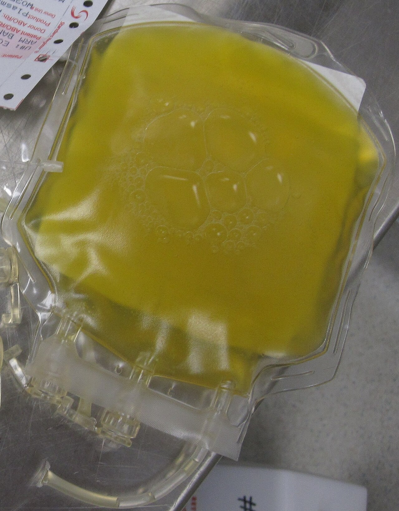
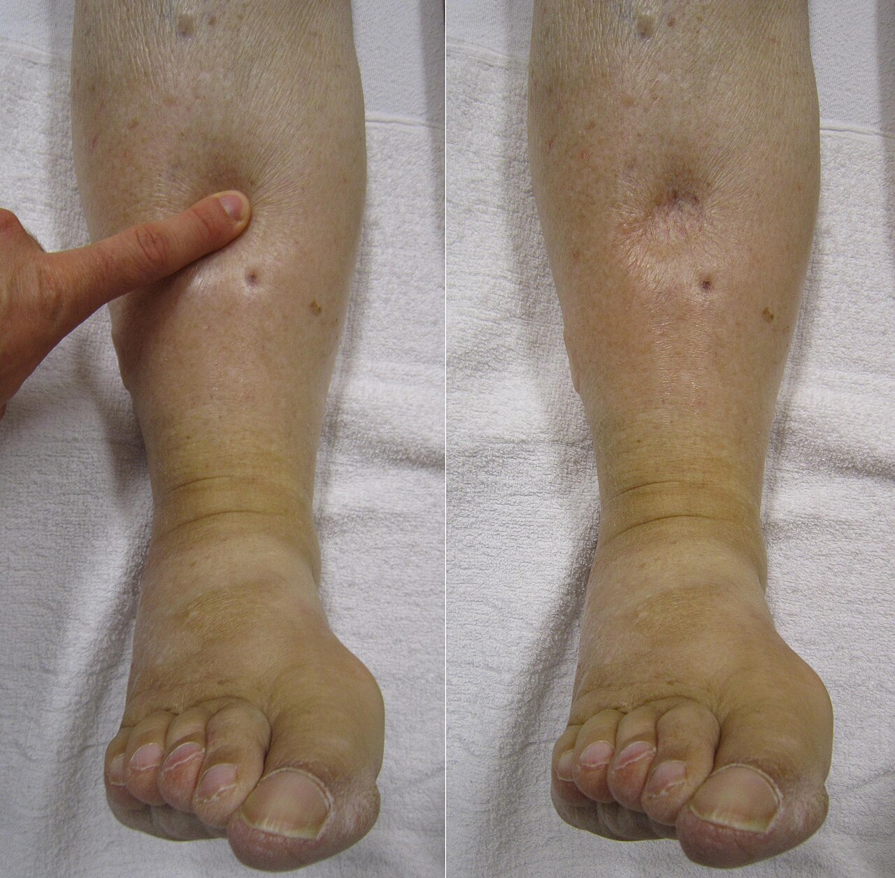

细胞生活的环境
本期导读
体液 · 内环境 · 理化性质 · 物质交换

视频原话 · 导读3 句
- 同学们好！这节课梳理人教版选择性必修一第一章第一节——细胞生活的环境。7.7s
- 这一节是整本书的基础，高考常考内环境成分的判断、三种细胞外液的关系，以及组织水肿的分析。9.6s
- 我们按十个考点梳理，每个考点都讲清楚怎么考、怎么做。5.5s
体液的组成01#
- 体液
- 细胞内液约占 2/3
- 细胞外液约占 1/3
- 血浆
- 组织液
- 淋巴液
体液的比例
细胞内液 2/3
细胞外液 1/3
易错
消化液、泪液、汗液、尿液不属于体液。
它们在消化道、泪道、汗腺导管、膀胱等与外界相通的管腔中，相当于“体外”。
它们在消化道、泪道、汗腺导管、膀胱等与外界相通的管腔中，相当于“体外”。
视频原话5 句
- 考点一，体液的组成。2.6s
- 人体内含有大量以水为基础的液体，统称为体液。5.0s
- 体液分为两部分：存在于细胞内的细胞内液，约占三分之二；存在于细胞外的细胞外液，约占三分之一。10.0s
- 细胞外液主要包括血浆、组织液和淋巴液。4.6s
- 易错：消化液、泪液、汗液、尿液都不属于体液。它们存在于消化道、泪道、汗腺导管、膀胱等与外界相通的管腔中，相当于“体外”的液体。14.2s
内环境与三者关系02#
内环境 = 细胞外液构成的液体环境
不包括细胞内液
不包括细胞内液
考法
先找淋巴液：一进一出两个单向箭头。
箭头从组织液来，指向血浆；与组织液双向交换的另一个是细胞内液。
箭头从组织液来，指向血浆；与组织液双向交换的另一个是细胞内液。
视频原话6 句
- 考点二，内环境的概念，以及三种细胞外液的关系。5.1s
- 由细胞外液构成的液体环境叫作内环境。注意，内环境就是细胞外液，不包括细胞内液。9.0s
- 血浆和组织液之间可以相互渗透：血浆透过毛细血管壁进入组织间隙形成组织液，大部分组织液又渗回血浆。10.7s
- 少部分组织液进入毛细淋巴管，形成淋巴液；淋巴液经淋巴循环，最终汇入血浆。这两步都是单向的。10.4s
- 组织液和细胞内液之间，也在不断进行物质交换。4.9s
- 考法：给出四种体液的箭头关系图，判断名称。先找淋巴液：它只有一个箭头进、一个箭头出，箭头从组织液来，指向血浆；和组织液双向交换的另一个，就是细胞内液。16.3s
细胞生活的内环境03#
| 细胞 | 生活的内环境 |
|---|---|
| 组织细胞 | 组织液 |
| 血细胞 | 血浆 |
| 淋巴细胞 | 淋巴液、血浆 |
| 毛细血管壁细胞 | 血浆、组织液 |
| 毛细淋巴管壁细胞 | 淋巴液、组织液 |
考法
先看细胞在哪里；管壁细胞两侧都要写全。
视频原话5 句
- 考点三，不同细胞生活的具体内环境。3.9s
- 体内绝大多数细胞是组织细胞，生活在组织液中；血细胞生活在血浆中。7.1s
- 淋巴细胞主要生活在淋巴液中，也会随淋巴循环进入血浆。5.9s
- 最容易错的是两种管壁细胞：毛细血管壁细胞一侧是血浆、一侧是组织液；毛细淋巴管壁细胞一侧是淋巴液、一侧是组织液。11.9s
- 考法：问某种细胞的内环境，先看它在哪里；管壁细胞要把两侧都写全。7.4s
内环境成分的判断04#
✓ 属于内环境
水
无机盐
葡萄糖
氨基酸
血浆蛋白
激素
抗体
尿素
O2
CO2
✗ 不属于内环境
血红蛋白红细胞内
呼吸酶细胞内
载体蛋白、受体细胞膜上
消化液与外界相通的管腔中
解题方法
- ① 在细胞内？
- →② 在细胞膜上？
- →③ 在与外界相通的管腔中？
- →都不是 → 属于内环境
发生在内环境中
抗原与抗体结合
乳酸与 NaHCO3 反应
不发生在内环境中
细胞呼吸细胞内
蛋白质合成细胞内（核糖体）
食物消化消化道
试一试：先看它在细胞内、细胞膜上，还是与外界相通的管腔中。
- 1血浆蛋白属于内环境：血浆蛋白存在于血浆中，是内环境的成分。
- 2血红蛋白在细胞内：血红蛋白在红细胞内；血浆蛋白才是内环境成分。
- 3消化液中的蛋白酶与外界相通的管腔中：消化道与外界相通，其中的液体不是内环境。
- 4细胞膜上的载体蛋白在细胞膜上：载体、受体位于膜上，不属于内环境。
视频原话5 句
- 考点四，内环境成分的判断，这是选择题的高频考点。5.5s
- 血浆中的水、无机盐、葡萄糖、氨基酸、血浆蛋白，以及激素、抗体、尿素、O2和CO2，都属于内环境的成分。11.8s
- 而血红蛋白在红细胞内，呼吸酶在细胞内，载体蛋白和受体在细胞膜上，消化液在与外界相通的管腔中，它们都不属于内环境。12.0s
- 解题方法：一看是不是在细胞内，二看是不是在细胞膜上，三看是不是在与外界相通的管腔里。三条都排除了，才属于内环境。12.4s
- 同理，抗原与抗体结合、乳酸与NaHCO3反应，发生在内环境中；而细胞呼吸、蛋白质合成发生在细胞内，食物消化发生在消化道，都不在内环境中。14.7s
血浆成分的特点05#
血浆的成分
水
约 90%
蛋白质
7%～9%
无机盐
约 1%
其他
营养物质、代谢废物、气体、激素等
蛋白质含量（相对值）
考法
成分表中蛋白质含量明显较高的是血浆。
视频原话4 句
- 考点五，血浆、组织液和淋巴液在成分上的差异。5.4s
- 血浆中约90%是水，蛋白质约占7%～9%，无机盐约占1%，此外还有血液运送的营养物质、代谢废物、气体和激素等。13.7s
- 组织液和淋巴液的成分与血浆相近，最主要的差别在于：血浆中含有较多的蛋白质，而组织液和淋巴液中蛋白质很少。11.5s
- 考法：给出几种液体的成分表，蛋白质含量明显较高的，就是血浆。6.7s
渗透压06#
渗透压
取决于溶质微粒的数目
血浆：主要与无机盐、蛋白质有关
细胞外液：90%以上来自 Na+、Cl−
细胞外液：90%以上来自 Na+、Cl−
考法
输液用 0.9% NaCl 溶液：与血浆等渗，维持细胞的正常形态。
视频原话4 句
- 考点六到八，内环境的三个理化性质：渗透压、酸碱度和温度。6.3s
- 渗透压是指溶液中溶质微粒对水的吸引力，大小取决于单位体积溶液中溶质微粒的数目。8.7s
- 血浆渗透压的大小主要与无机盐和蛋白质的含量有关；细胞外液渗透压的90%以上来源于Na+和Cl-。10.6s
- 考法：输液为什么用0.9%的NaCl溶液？因为它和血浆渗透压相等，是等渗溶液，能维持细胞的正常形态。11.3s
酸碱度07#
酸碱度
pH 7.35～7.45
缓冲物质：HCO3−、H2CO3 等
考法
乳酸 + NaHCO3 → 乳酸钠 + H2CO3；H2CO3 → CO2 + H2O，CO2 经呼吸排出
→ 血浆 pH 不会明显下降
→ 血浆 pH 不会明显下降
视频原话2 句
- 正常人血浆的pH为7.35～7.45，能保持稳定，与其中的HCO3-、H2CO3等物质有关。9.7s
- 再比如，剧烈运动产生的乳酸进入血浆，会与NaHCO3反应，生成乳酸钠和H2CO3，H2CO3再分解成CO2和水，CO2通过呼吸排出，所以血浆pH不会明显下降。16.2s
温度08#
温度
37 ℃左右
人体细胞外液的温度
视频原话1 句
- 人体细胞外液的温度一般维持在37 ℃左右。4.8s
物质交换的媒介09#
考法O2 从外界进入组织细胞并被利用，至少穿过几层生物膜？
肺泡壁 2
+毛细血管壁 2
+红细胞 2
+毛细血管壁 2
+组织细胞膜 1
+线粒体 2
= 11 层
视频原话5 句
- 考点九，内环境是细胞与外界环境进行物质交换的媒介。5.9s
- 营养物质经消化系统吸收进入内环境；O2经呼吸系统进入内环境，CO2也经呼吸系统排出。9.8s
- 细胞产生的尿素等代谢废物，主要经泌尿系统排出，少部分经皮肤排出。这些物质在体内的运输，都要依靠循环系统。11.6s
- 同时，细胞不仅依赖于内环境，也参与了内环境的形成和维持。6.1s
- 考法：O2从外界进入组织细胞并被利用，至少穿过几层生物膜？肺泡壁两层，进出毛细血管壁两层，进出红细胞两层，再出毛细血管壁两层，进入组织细胞一层，进入线粒体两层，一共11层。19.6s
组织水肿的成因10#

血浆渗透压↓或组织液渗透压↑→水分进入组织液 → 水肿
| 原因 | 变化 | 结果 |
|---|---|---|
| 营养不良 | 血浆蛋白减少 | 血浆渗透压↓ |
| 肾小球肾炎 | 蛋白质随尿液流失 | 血浆渗透压↓ |
| 过敏反应 | 毛细血管壁通透性增大 | 组织液渗透压↑ |
| 淋巴循环受阻 | 组织液中蛋白质不能回流 | 组织液渗透压↑ |
| 局部代谢旺盛 | 代谢产物增多 | 组织液渗透压↑ |
解题方法
先判断是血浆渗透压降低还是组织液渗透压升高，再对号入座。
视频原话6 句
- 考点十，组织水肿的成因分析。3.4s
- 组织水肿是组织液过多引起的。所有原因都可以归结为：血浆渗透压降低，或组织液渗透压升高，水分从血浆流向组织液。12.2s
- 长期营养不良，血浆蛋白减少；肾小球肾炎，蛋白质随尿液流失。这两种都使血浆渗透压降低。10.3s
- 过敏反应使毛细血管壁通透性增大，血浆蛋白进入组织液；淋巴循环受阻，组织液中的蛋白质不能回流。这两种都使组织液渗透压升高。13.7s
- 局部组织代谢旺盛，代谢产物增多，组织液渗透压也会升高。6.2s
- 解题方法：遇到水肿题，先判断是血浆渗透压降低，还是组织液渗透压升高，再把原因对号入座。9.8s
易错速查✓
先自己判断，再点按钮查看对错与解析。
- 1血浆、组织液、淋巴液都能相互转化说法错误：淋巴液只能单向流回血浆
- 2血红蛋白属于内环境的成分说法错误：血红蛋白在红细胞内
- 3毛细淋巴管壁细胞的内环境是淋巴液和组织液说法正确。
- 4血浆渗透压主要来自蛋白质说法错误：主要与无机盐和蛋白质的含量有关
- 5剧烈运动后血浆pH明显下降说法错误：缓冲物质使pH保持稳定
- 6食物的消化发生在内环境中说法错误：消化道与外界相通，不属于内环境
抓住“内环境”这条主线，这一节稳稳拿分！
视频原话 · 易错速查5 句
- 最后，用六道判断题检验一下。3.6s
- 血浆、组织液、淋巴液都能相互转化？错，淋巴液只能单向流回血浆。血红蛋白属于内环境的成分？错，它在红细胞内。13.2s
- 毛细淋巴管壁细胞的内环境是淋巴液和组织液？对。血浆渗透压主要来自蛋白质？错，主要与无机盐和蛋白质的含量有关。12.8s
- 剧烈运动后血浆pH明显下降？错，缓冲物质使pH保持稳定。食物的消化发生在内环境中？错，消化道与外界相通。13.1s
- 十个考点归结为一句话：细胞外液构成内环境，内环境是细胞与外界环境进行物质交换的媒介。掌握这条主线，这一节就能稳稳拿分！我们下期再见！14.8s
图片来源
图片来源：Wikimedia Commons —— DiverDave《FreshFrozenPlasma》CC BY-SA 3.0；James Heilman, MD《Combinpedal》CC BY-SA 3.0
Photo: DiverDave, CC BY-SA 3.0